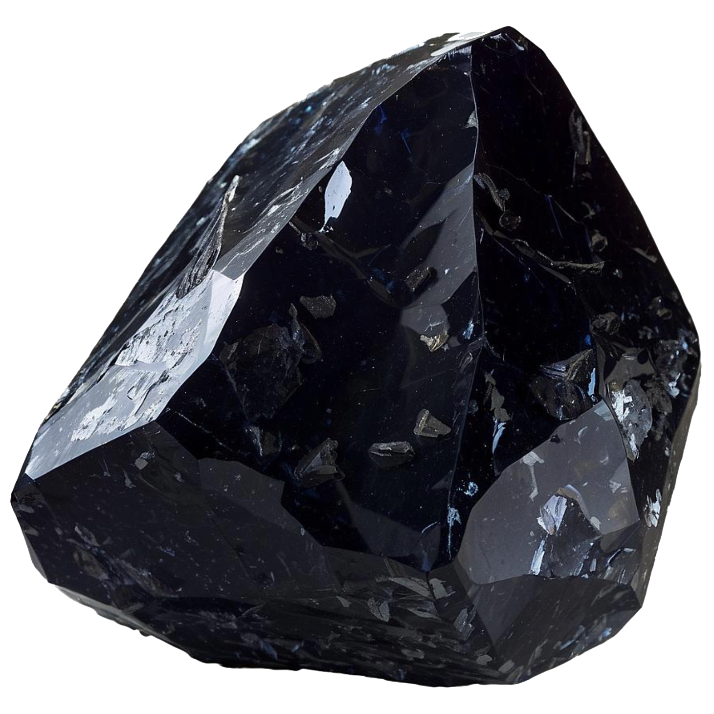
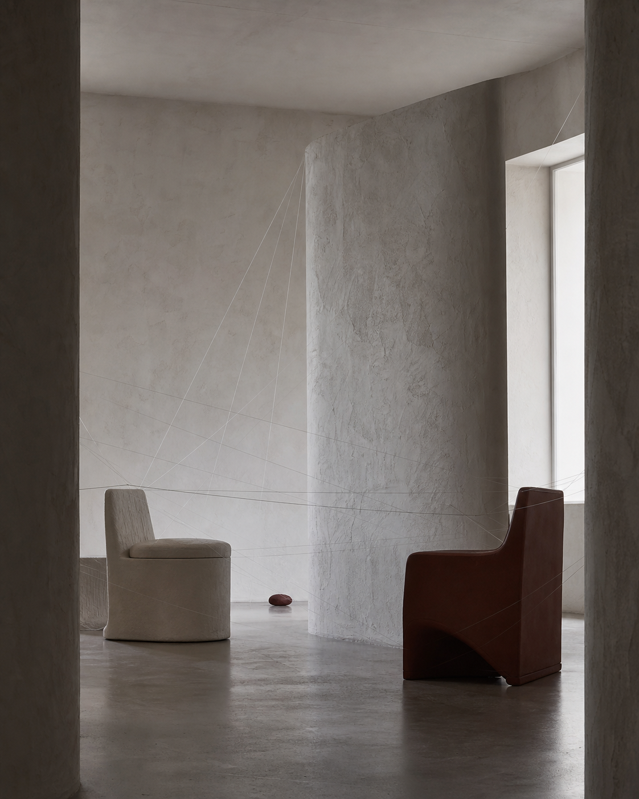
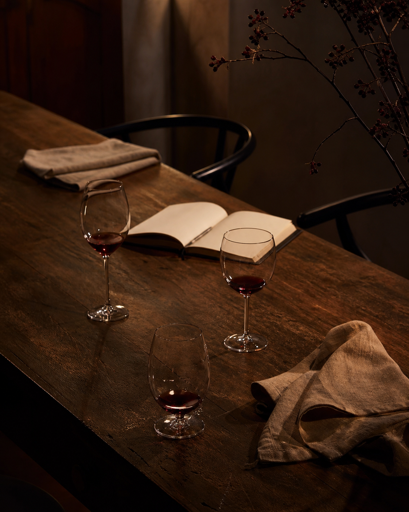
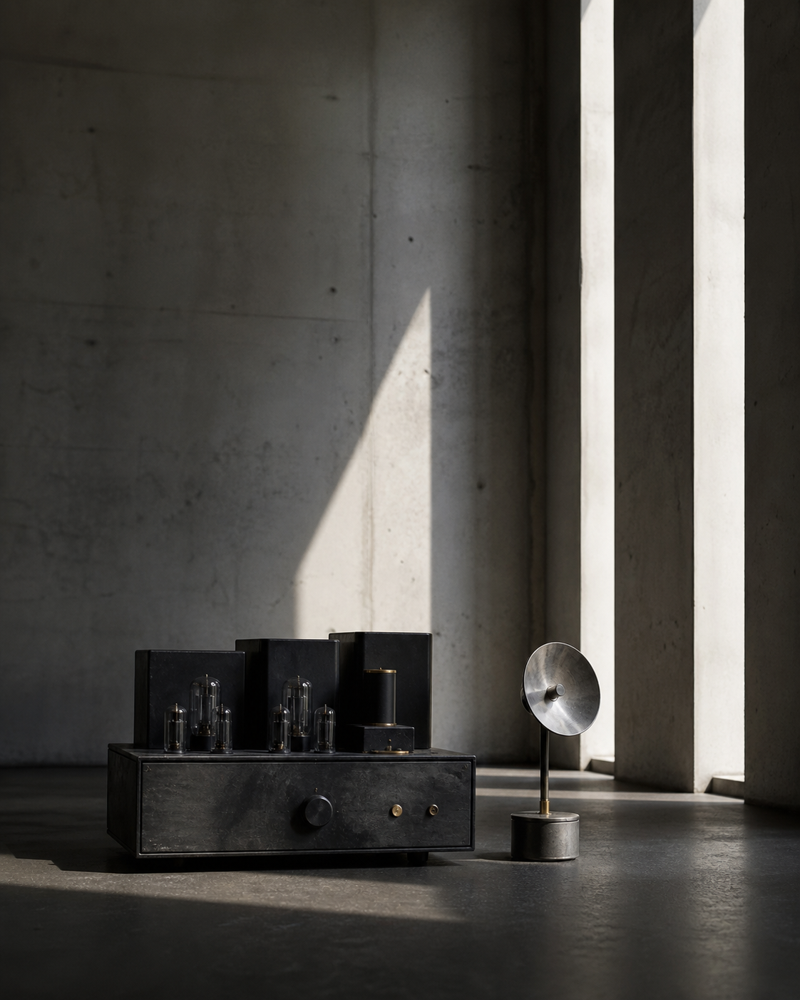
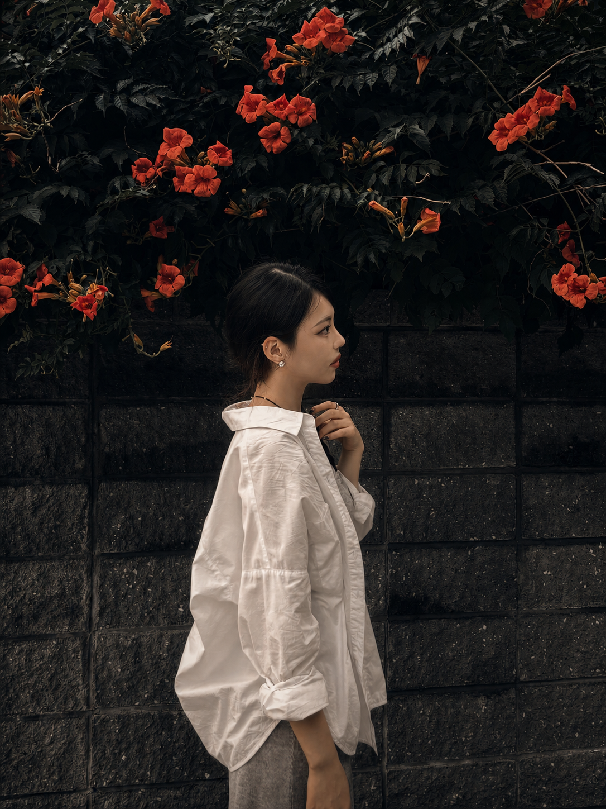

I. / EYEUMConnection
Three practices
One continuous context.
Based in Seoul
Operating between
people and ideas
CHAKYEONG

AH


Practice precedes identity /
ExplorePractices
Not separated by category

II. / MARSHALLTaste
III. / VINERCommunity
아이음1 / 3
You Won’tFind Thisin One Category
세 작업은 서로 다른 이름으로 존재합니다.
아이음은 관계를 잇고, 마샬은 취향을 조율하며, 와인 커뮤니티는 그 관계가 머무를 테이블을 만듭니다. 형식은 다르지만 출발점은 같습니다. 사람 사이에 이전에는 없던 맥락을 놓는 일.
OriginOutcomes
프로젝트는 결과물로 끝나지 않습니다.
그 안에서 만들어진 언어와 관계는 원래의 이름을 떠나 다른 형태로 계속 움직입니다.
ConnectionThe PracticeShown throughWhat It Leaves.
작업과 사람은 분리되어 있지 않습니다.
아이음에서 발견한 연결, 마샬에서 조율한 취향, 와인 커뮤니티에서 이어지는 대화는 같은 실천의 서로 다른 장면입니다.
Not EverythingIs Explainedat Once
A visual index of the practice

하나의 작업은 하나의 이미지로 설명되지 않습니다.
공간, 오브젝트, 사람과 테이블 사이를 오가며
차경아의 실천이 하나의 장면으로 축적됩니다.
UpdatesNow Forming
Viner — Forming
첫 번째 멤버 경험과 대화의 구조를 만들고 있습니다.
01EYEUM — In Reflection
아이음에서 남은 언어와 관계를 다시 기록하고 있습니다.
02Marshall — Circulating
취향을 매개하는 오브젝트와 장면을 수집합니다.
03FormedbyPeople
CHA / SEOUL — 2026
세 개의 이름을 움직이는 한 사람의 시선.
아이음에서 발견한 연결, 마샬에서 조율한 취향, 와인 커뮤니티에서 이어지는 대화는 차경아라는 하나의 태도에서 시작됩니다.
사람과 감각, 그 사이의 연결을 만듭니다.
Begin withContext